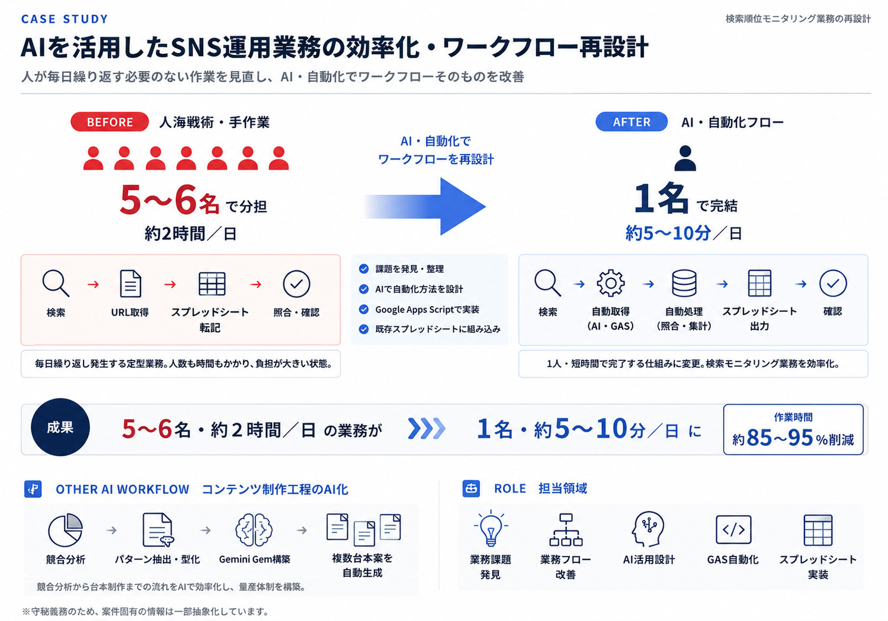
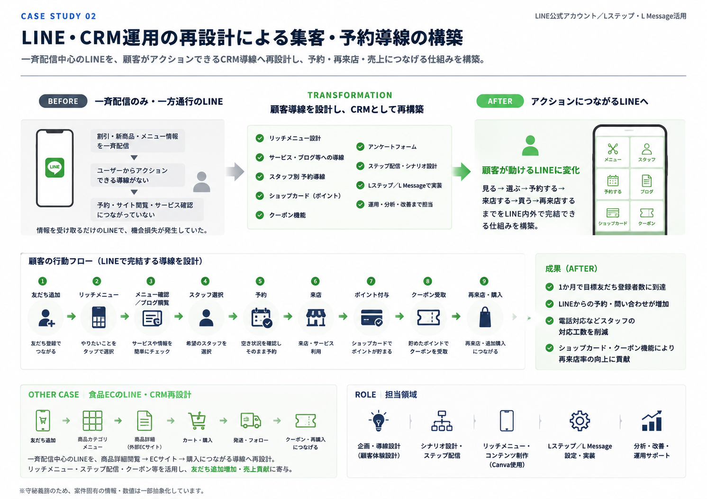
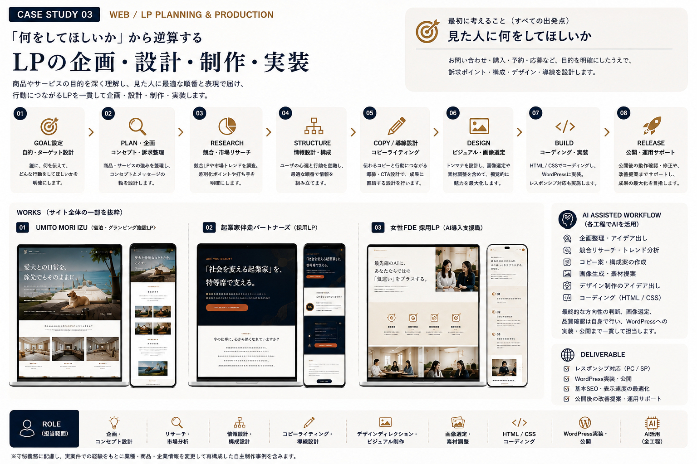
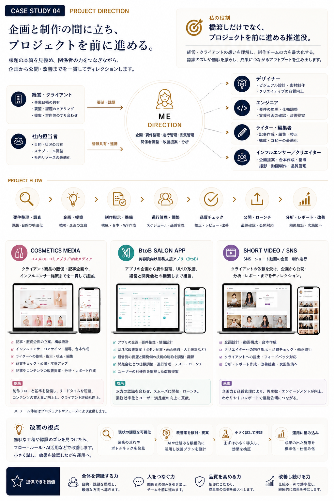
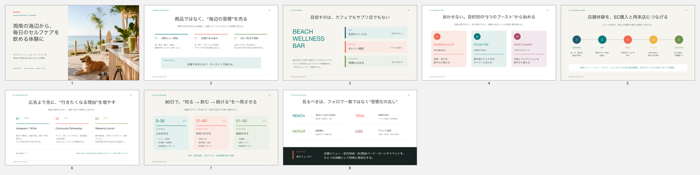

CASE 01 / AI WORKFLOW
AIを活用したSNS運用業務の効率化・ワークフロー再設計
毎日発生していた検索順位モニタリング業務を見直し、AIとGoogle Apps Scriptを活用してワークフローを再設計。
- 従来
- 5〜6名・約2時間／日
- 改善後
- 1名・約5〜10分／日
- 成果
- 約85〜95％の作業時間削減
担当課題発見 / 業務フロー設計 / AI活用設計 / GASによる自動化 / Googleスプレッドシート実装

AI WORKFLOW / WEB & LP / LINE & CRM / DIRECTION
AI・Web・CRMを活用し、
業務改善から企画・制作・実装まで。
企画、Web・LP制作、LINE・CRM設計、AIを活用した業務改善、プロジェクトディレクションに対応します。
手段から考えるのではなく、「何を実現したいのか」から逆算して、必要な仕組みを設計・実装します。
01
課題の整理から設計・実装・改善まで。実際に担当したプロジェクトをもとに紹介します。
CASE 01 / AI WORKFLOW
毎日発生していた検索順位モニタリング業務を見直し、AIとGoogle Apps Scriptを活用してワークフローを再設計。
担当課題発見 / 業務フロー設計 / AI活用設計 / GASによる自動化 / Googleスプレッドシート実装

CASE 02 / LINE & CRM
一斉配信中心だったLINE公式アカウントを、顧客が自ら行動できるCRM導線へ再設計。リッチメニュー、予約、アンケート、ステップ配信、ショップカード等を組み合わせ、予約・問い合わせ・購入・再来店につながる顧客接点を構築。
1か月で目標登録者数に到達 / LINE経由の予約導線を構築 / 問い合わせ対応負荷の軽減 / 購入・再来店につながる導線を整備
担当顧客導線設計 / シナリオ設計 / LINE公式アカウント / Lステップ / L Message / 実装 / 分析 / 改善

CASE 03 / WEB & LP
LPを単なるデザイン制作としてではなく、「誰に」「何を伝え」「最終的に何をしてほしいか」から逆算して設計。リサーチ、競合分析、構成、コピー、デザイン、HTML/CSS、WordPress実装まで担当。
AIはリサーチ、アイデア整理、コピー案、構成案、画像生成、コーディング等に活用。最終的な判断、画像選定、構成・品質管理は本人が行います。
実制作例宿泊施設LP / 採用LP / AI人材採用LP / コスメティックLP

CASE 04 / DIRECTION
経営・クライアント側の要望と、デザイナー、エンジニア、ライター、インフルエンサー、クリエイター等の制作実務を接続。
BtoBサロン向けアプリでは、経営側の要望と開発側の制約を整理し、UI/UXや画面遷移等について改善提案を行い、ローンチまでディレクション。AIはリサーチ、資料作成、議事録、分析、レポート作成等に活用。
担当要件整理 / 企画 / 制作進行 / スケジュール管理 / 外部スタッフ対応 / 品質チェック / クライアント対応 / 改善提案 / 分析

02
複数領域のスキルを、「できることの羅列」ではなく、事業課題を解決するための手段として扱います。
01
繰り返し発生する業務を見直し、AI・GAS・Googleスプレッドシートなどを組み合わせて、再現性のある仕組みに変えます。
02
「何を作るか」ではなく、「誰に、何をしてほしいか」から逆算。リサーチ、構成、コピー、デザイン、実装、公開後の改善まで対応します。
03
配信だけで終わらせず、予約・問い合わせ・購入・再来店につながる顧客導線としてLINE運用を設計します。
04
経営・クライアント・制作チームの間に立ち、課題、要件、進行を整理。複数の専門性を成果につなげます。
03
企画意図と導線設計を伴う、実制作と提案の一部です。

WEB / LP
肌悩み・商品理解・購入導線を、余白とやわらかなトーンで設計。
WEB / LP
愛犬との滞在体験を主役に、情緒と予約導線を両立。
作品を見るWEB / LP
事業への共感と候補者の行動喚起を軸に、ブランドトーンを設計。
作品を見るWEB / LP
AI領域で働く魅力を、候補者の感情に寄り添う構成とビジュアルで表現。
作品を見る
PLANNING / PROPOSAL
商品そのものではなく、体験価値からブランド・顧客導線・90日施策を設計。
04
目的を明確にし、現状を理解し、必要な手段を設計する。つくって終わりではなく、運用と改善まで見据えて進めます。
何を実現したいかを決める
現状・課題・ユーザーを整理する
施策・導線・仕組みを設計する
制作・実装する
運用・分析し、改善する
05
Web・マーケティング・AIを横断し、課題整理から企画・制作・運用改善まで携わっています。
2011年からフリーランスとして、Webメディア、コンテンツ企画、LP・Web制作、SNS、LINE/CRM、アプリUI/UX、制作ディレクション等に携わってきました。
依頼されたものをそのまま制作するだけではなく、「何のために行うのか」に立ち返り、より良い進め方や仕組みを考え、提案・実装することを大切にしています。
AI活用・業務改善 / Web・LP企画制作 / LINE・CRM / Webディレクション / コンテンツ企画・編集 / SNS / UI・UX / アクセス分析
ChatGPT / Gemini / Claude / Google Apps Script / Googleスプレッドシート / WordPress / HTML・CSS / Canva / LINE公式アカウント / Lステップ / L Message / GA4 / Google Search Console / CapCut / Premiere Pro
06
プロジェクトのご相談・ご依頼はこちらから。